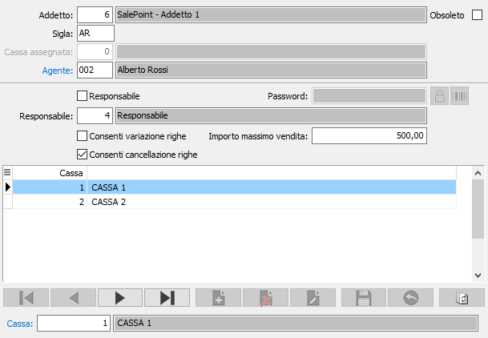
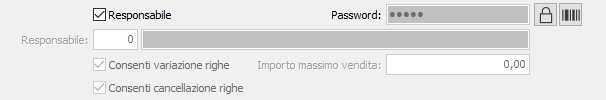
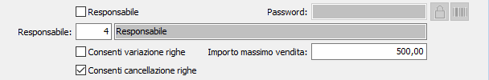

Addetti alla vendita
La tabella consente di codificare gli operatori che andranno a registrare i movimenti di vendita. Ad ogni addetto può essere associato una specifica cassa.

CODICE: codice numerico dell'addetto. Sul campo sono attive le funzioni di ricerca (F9).
SIGLA: abbreviazione per indicare l'operatore sui movimenti di vendita; in inserimento viene proposta in automatico utilizzando i primi tre caratteri del nome dell'operatore.
CASSA ASSEGNATA: indicare il numero della cassa da assegnare all'addetto; se presente l'addetto potrà effettuare movimenti solo su quella specifica cassa. Il campo non è obbligatorio.
AGENTE: Il campo è presente se gestite le provvigioni per addetto e sarà utilizzato per impostare la politica provvigionale per l’addetto stesso.
OBSOLETO: flag attivabile dall’utente per inibire ulteriori utilizzi dell’elemento di tabella in esame.
La parte bassa della finestra è riservata all'abilitazione da parte dell'addetto ad operare su casse specifiche; se rimane vuota l'addetto può operare su tutte le casse disponibili.
La parte intermedia della finestra contiene i dati relativi all'operatività dell'addetto; se è classificato come responsabile, casella Responsabile spuntata, oppure come normale operatore, casella Responsabile vuota.
Responsabile

Il responsabile deve necessariamente inserire una password, che potrà essere modificata successivamente tramite il pulsante ; sarà necessario comunque fornire la vecchia password. Con il pulsante è possibile stampare il badge con nome e barcode della password (non in chiaro) da utilizzare in cassa per autorizzare le operazioni agli addetti qualora richiesto.
Operatore

L'operatore può indicare il diretto responsabile, che se presente sarà l'unico a poter autorizzare le operazioni non consentite all'addetto; se il responsabile viene lasciato vuoto qualsiasi responsabile sarà in grado di autorizzare l'addetto. Tramite le due spunte è possibile indicare se l'operatore può effettuare variazioni o cancellazioni di righe già inserite durante la normale operatività di cassa; è inoltre possibile impostare un importo massimo per le vendite relativo solo all'operatore indicato (rimangono validi gli eventuali massimali di configurazione).